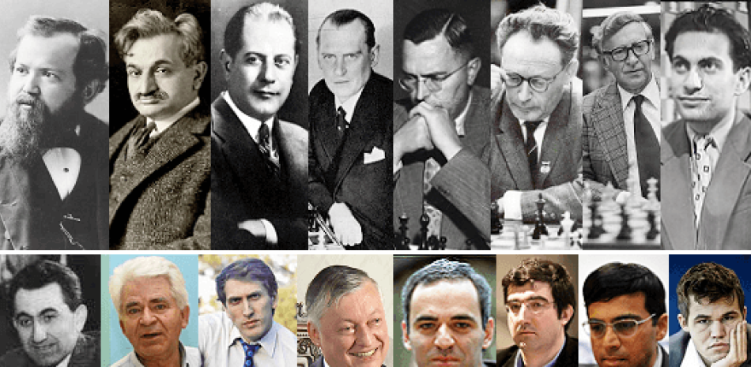

EL AJEDREZ
El deporte del Ajedrez tiene registros de su existencia desde el SIGLO VI en el antiguo pueblo persa.
La leyenda del Ajedrez y los granos de trigo, ¿era posiblel pagar?
Es una de tres disciplinas en las que existen personas con grandes cualidades y estas disciplinas son:
Ajedrez - Matemáticas - Música
Campeones mundiales de Ajedrez

Estas personas consiguieron ser cada uno de ellos los mejores de su epoca, desde el SIGLO XIX se estableció una federación internacional para registrar quien podría ser el mejor de todos, en esta competición saldría lo que llamarían:
El Campeón del Mundo
Oficialmente desde 1886 cuando se proclamó al primer campeón del mundo
Campeones del mundo oficiales
| Ajedrecista |
|
Nacionalidad |
Años como campeón del mundo |
| Wilhelm Steinitz |
 |
Austrohúngaro |
8 |
1886-1894 |
| Enmanuel Lasker |
 |
Alemania |
27 |
1894-1921 |
| José Raúl Capablanca |
 |
Cuba |
6 |
1921-1927 |
| Alexander Alekhine |
 |
Francia |
17 |
1927-1935 |
| 1937-1946 |
| Max Euwe |
 |
URSS |
2 |
1935-1937 |
| Mijaíl Botvínnik |
|
URSS |
13 |
1948-1957 |
| 1958-1960 |
| 1961-1963 |
| Vasily Smislov |
|
URSS |
1 |
1957-1958 |
| Mikhail Tal |
|
URSS |
1 |
1960-1961 |
| Tigran Pretrosian |
|
URSS |
6 |
1963-1969 |
| Boris Spassky |
|
URSS |
3 |
1969-1972 |
| Bobby Fischer |
 |
EEUU |
3 |
1972-1975 |
| Anatoly Karpov |
|
URSS |
10 |
1975-1985 |
| Garry Kasparov |
|
URSS |
8 |
1985-1993 |
Campeones del mundo clásico PCA
| Ajedrecista |
|
Nacionalidad |
Años como campeón del mundo |
| Garry Kasparov |
 |
Rusia |
7 |
1993-2000 |
| Vladimir Krámnik |
|
Rusia |
6 |
2000-2006 |
Campeones del mundo oficiales FIDE
| Ajedrecista |
|
Nacionalidad |
Años como campeón del mundo |
| Anatoly Karpov |
|
Rusia |
6 |
1993-1999 |
| Aleksandr Jálifman |
|
Rusia |
1 |
1999-2000 |
| Viswanathan Anand |
 |
India |
8 |
2000-2002 |
| 2007-2013 |
| Ruslan Ponomariov |
 |
Ucrania |
2 |
2002-2004 |
| Ruslan Kasimdzhanov |
 |
Uzbekistán |
1 |
2004-2005 |
| Veselin Topalov |
 |
Bulgaria |
1 |
2005-2006 |
| Vladimir Krámnik |
|
Rusia |
1 |
2006-2007 |
| Magnus Carlsen |
 |
Noruega |
10 |
2013-2023 |
| Ding Liren |
 |
China |
1 año y vigente Campeón |
En 1946 Alexander Alekhine falleció siendo campeón vigente.
En 1975 Bobby Fisher no se presentó a defender el titulo de campeon del mundo contra Anatoly Karpov.
En 2023 Magnus Carlsen no quiso defender su titulo alegando "aburrimiento" en las partidas lentas.
Página web de referencia de datos: Enlace
¿Quién es el mejor jugador de todos los tiempos de Ajedrez?
Resulta muy dificil asegurar que un jugador es el mejor del mundo por encima de los demás campeones, para cada jugador habría que analizar el contexto en los que el jugador desarrolloba su Ajedrez,
En el Siglo XIX la información no se movía como actualmente lo hace, los jugadores de ajedrez que destacaban lo hacian al 100% por un ingenio y un juego creativo e intuitivo sin apenas estudios escritos, pues era muy dificil conseguir dicha información, pero incluso en el caso de que se consiguiera, ¿cuanto de verdad tenia dicha información? así pues, solo les quedaba jugar como ellos mismos interpretaban el juego.
En esta epoca destacaron jugadores miticos que son ejemplos hoy en dia, de esa creatividad, como por ejemplo:
Son los llamados Campeones del mundo sin corona
- Ruy López Segura
(Español del siglo XVI en algunas concepciones se le indica como "el primer campeón mundial de la historia")
- Gioachino Greco
(Italiano del Siglo XVII, registró partidas completas y formalizó primeras ideas de teoría)
- André Philidor
(Francés se le atribuye en el Siglo XVIII el arte de la defensa, hoy en dia vigente en nuestros estudios)
- Louis-Charles de la Bourdonnais
(En 1834 se disputó el primer campeonato internacional del que resulto ganador este jugador Francés)
- Howard Staunton
(Este britanico estanderizó las piezas, las reglas y dibulgó el Ajedrez a nivel internacional)
- Adolf Anderssen
(Éste Aleman fue protagonista de la partida más famosa de la historia, llamada: "La Inmortal")
- Paul Morphy
(Nacido en EEUU, posiblemente de los mejores jugadores de la historia, se retó al imperio RUSO y dejó partidas y conceptos del ajedrez que revolucionaron el Ajedrez, hoy no se entiende un estudio sin nombrar a este jugador)
Paises y Ajedrez
El Ajedrez es tal vez el deporte intelectual y los paises a lo largo de la historia lo han usado para resaltar intelectualmente sobre sus competidores
Esto ha creado a lo largo de la historia duelos miticos entre jugadores de diferentes paises e incluso duelos del mismo pais pero de difenrtes ideologías.
Los paises que mas veces ganaron el campeonato del mundo son:
 10 URSS - Rusia y 52 años con campeón Ruso
10 URSS - Rusia y 52 años con campeón Ruso- 1 Alemania y 27 años
- 1 Francia y 17 años
 1 Noruega y 10 años
1 Noruega y 10 años- 1 Austrohúngaro y 8 años
- 1 India y 8 años
- 1 EEUU y 3 años
- 1 Ukrania y 1 año
- 1 Uzbekistán y 1 año
 1 Bulgaria y 1 año
1 Bulgaria y 1 año- 1 China y 1 año
Para realizar actualmente la potencia de los paises se contabilizan por los GM Grandes Maestros, que es la máxima titulación en el Ajedrez
- 256 Rusia
- 101 EEUU
- 96 Alemania
- 93 Ukrania
- 64 India
 58 Hungría
58 Hungría 58 Serbia
58 Serbia 56 España
56 España- 50 Francia
- 48 China
Nota: En Aragón oficialmente ha habido solamente dos GM que actualmente nos representan internacionalmente más un tercer GM como fué Ramón Rey Ardid quién ganó 13 veces seguidas el campeonato de España, pero no existia el titulo de GM
FIDE
Federación Internacional de Ajedrez
Conocida del acrónimo en francés "Fedération Internatinale des Échecs" FIDE, Se fundó en Francia en el año 1924 y es la encargada de organizar el Campeonato del mundo de Ajedrez
además calcula el ranking de Elo FIDE la puntación que los jugadores ganan o pierden conforme sus resultados con otros rivales
La podemos encontrar en:
FIDE Headquarter
1007 Lausanne, Switzerland
Avenue de Rhodanie 54
Tel: + (41) 21 6010039
office@fide.com
Web Creada by LMFG